This tutorial builds a two-servo robot leg on a stand and connects it to S.P.I.D.E.R. from start to finish. First you export the leg's 3D model from Blender and set it up in S.P.I.D.E.R., so its live 3D twin bends where the real leg bends. Then you flash an ESP32-S3-WROOM-1 board with this project's code and drive the leg over this PC's own Bluetooth.
The stand holds the hip servo, the hip turns the upper leg, the upper leg carries the knee servo, and the knee turns the lower leg. The rig lies flat on its base with both servo shafts level, so the leg swings up and down. It is the next step after the single servo: the same board and link, one more servo, and your own model.
Every step and screenshot below was done on 2026-10-11 with a real YD-ESP32-S3 N8R2 board (an ESP32-S3-WROOM-1 module) on COM6, with both servos wired. The model part also works with no hardware at all, using a virtual leg.
| You will do | Time |
|---|---|
| Export the leg from Blender | 2 min |
| Make a robot profile and map its joints | 3 min |
| Flash MicroPython onto the board (whole-chip erase included) | 71 s |
| Upload the dog leg code | 19 s |
| Connect over Bluetooth LE | 5 s |
1. What you need
| Part | Notes |
|---|---|
| An ESP32-S3-WROOM-1 board | Here the YD-ESP32-S3 N8R2 (a DevKitC-1 clone); Espressif's own DevKitC-1 works the same. Board details: the servo tutorial. |
| Two MG90S micro servos | The hip and the knee. SG90s work too. |
| The printed rig | The stand (robolegstand), the upper leg and the lower leg. |
| A 5-6 V supply, 2 A or more | Strongly recommended for two servos (step 6). |
| Jumper wires and a USB-C data cable | Some cables only charge: if no COM port appears, try another cable first. |
Software:
- S.P.I.D.E.R., and Blender (4.x) with the leg's
.blend. - Python 3 (python.org) for the Bluetooth LE helper. S.P.I.D.E.R. installs the one package it needs,
bleak(MIT), when you press a button in step 9. - The MicroPython firmware for the ESP32-S3:
ESP32_GENERIC_S3-20260824-v1.29.0.binfrom https://micropython.org/download/ESP32_GENERIC_S3/. Save it infirmware/micropython/firmware/in S.P.I.D.E.R.'s folder. MicroPython is MIT-licensed.
2. How the leg's rig is built
S.P.I.D.E.R. turns the parts of a model with bones. The general rules (bones on the pivots, weights, testing in
Pose Mode) are in Import your own 3D models; this is how the leg
uses them. The .blend holds two copies of the MG90S servo rig:
Armature.001: the stand, the hip servo and the upper leg. Its boneGearbonesits on the hip servo's output shaft and points along it, so it turns about its own Y. The upper leg is weighted to it.Armature.002: the knee servo and the lower leg. It is parented to a bone of the upper leg, so the whole knee rides along when the hip turns. Its ownGearboneturns the lower leg.
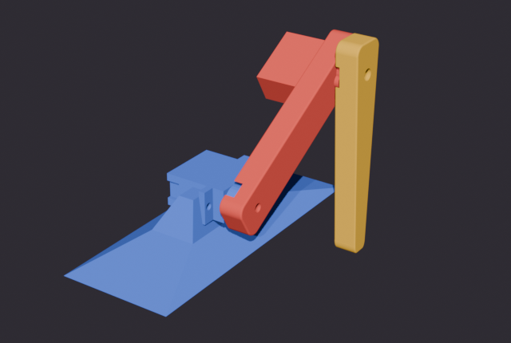
Blue stays still (the stand and the hip servo's body). Red turns with the hip (the upper leg and the knee servo). Amber turns with the knee (the lower leg).
Before you export, test it in Pose Mode: rotate each Gearbone about Y (R Y 30). Only its own part may
turn, and the knee must follow the hip. Press Alt+R to put the bone back.
3. Lay it flat and export
In the .blend the rig stands upright. On the bench it lies flat on its base, so turn it once before exporting:
- In the Outliner, click
Armature.001, so it is the active object. - Press N and, on the Item tab, set Rotation Y to 90°. Only the armature changes; its children follow. The leg now lies on the stand's base with both servo shafts level.
- Right-click
Armature.001in the Outliner > Select Hierarchy, so everything under it is exported too. - File > Export > glTF 2.0 (.glb/.gltf), with: - Format: glTF Binary (.glb) - Include: Selected Objects - Transform: +Y Up (on) - Data > Armature and Skinning: on. Animation: off.
- Save it as
My models/Robot dog leg.glb. - Optional: undo the rotation (Ctrl+Z, or Rotation Y back to 0) to keep the rig upright in the
.blend. The exported file keeps the flat pose.
The .blend is in millimetres (Unit Scale 0.001), which is why S.P.I.D.E.R. gets Scale 0.001 in the next step.
4. Make a robot profile
A robot profile tells S.P.I.D.E.R. which model to show for which robot. Open Link Hub (VIEW > Link Hub), scroll to Robot profiles, press Add robot profile and fill it in:
| Field | Value | Why |
|---|---|---|
| Name | My dog leg |
A name for you. |
| Matches robot | SPIDER-LEG |
The name the board will send. You give the board this name in step 8. |
| Placeholder | dogleg |
What the twin shows while your model is missing, and how this profile's virtual robot moves. |
| 3D model | My models/Robot dog leg.glb |
Press the folder button to pick the file from step 3. |
| Joint axis | y |
Both gear bones turn about their own Y. |
| Scale | 0.001 |
The model is in millimetres. |
| Joints | (empty for now) | Step 5 fills it in. |
5. Map the joints
The board reports the leg as two joints, hip and knee: each one's angle from home, in radians. The model has
no bones with those names, so S.P.I.D.E.R. has to be told which bone each joint turns.
You do not need the board for this. Press Start a virtual one on the profile: a virtual leg connects as
SPIDER-LEG, runs the same commands as the real board's code, and its robot screen opens with your model. Because the
joints match nothing yet, the twin stays still, and the Console names the model's bones and suggests a line:
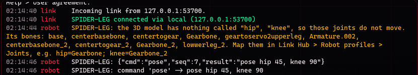
Two things to know about that list:
- S.P.I.D.E.R. merges the two armatures into one skeleton. Names that appear twice get
_2, so the knee'sGearbonebecomesGearbone_2(and so do its other bones). - A dot in a name becomes
_(Armature.002is listed, but bones are matched by their new names).
Type the suggested line into Joints:
hip=Gearbone; knee=Gearbone_2
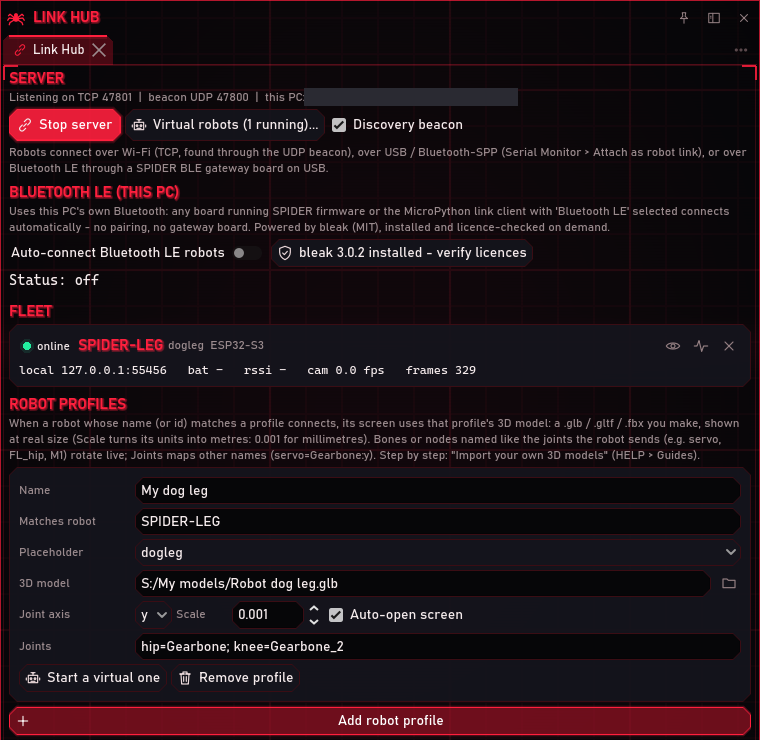
The twin reloads at once and now bends with the leg. Here the virtual leg holds hip 45, knee 90: before the joints are mapped (left) and after (right):
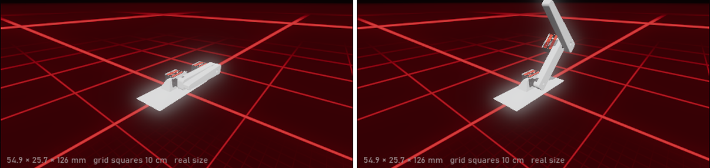
If a joint turns the wrong way, put a minus on its axis: knee=Gearbone_2:-y.
When you are done, stop the virtual leg (Link Hub > Virtual robots... > Stop), so the real board can use the
name SPIDER-LEG.
6. Wire the two servos
| From | To |
|---|---|
| Hip servo orange (signal) | GPIO4 (the same pin as the single servo) |
| Knee servo orange (signal) | GPIO5 |
| Both servos red (+5 V) | The servo supply's +5 V rail |
| Both servos brown (GND) | The servo supply's GND rail |
| Servo supply GND | The board's GND (one shared ground, or the signals mean nothing to the servos) |
Power. Two MG90S can pull more than 1 A together when they start or push against something. A breadboard power module (MB102, an AMS1117 regulator: 0.8 A at most) is enough for gentle test moves only. If the board resets or the servos twitch when both move, power the servo rails from a 5-6 V supply that gives at least 2 A, and keep the board on USB. Never power servos from the board's 3V3 pin.
Leave the leg parts off the servo gears until step 10: the servos move to their home angles as soon as the code starts.
7. Flash MicroPython
Plug the board into the PC with the USB-C port marked COM (the CH343 chip). Then LAYOUT > Flash Bay and, in TARGET:
- Board:
YD-ESP32-S3 N8R2 (VCC-GND, DevKitC-1 clone), orESP32-S3-WROOM-1 (DevKitC-1)for Espressif's board. - Serial port: the CH343 port, here
COM6 - WCH CH34x/CH910x (USB-Enhanced-SERIAL CH343 (COM6)). - Leave Flash baud 460800, Flash size Auto-detect and Reset Auto as they are.
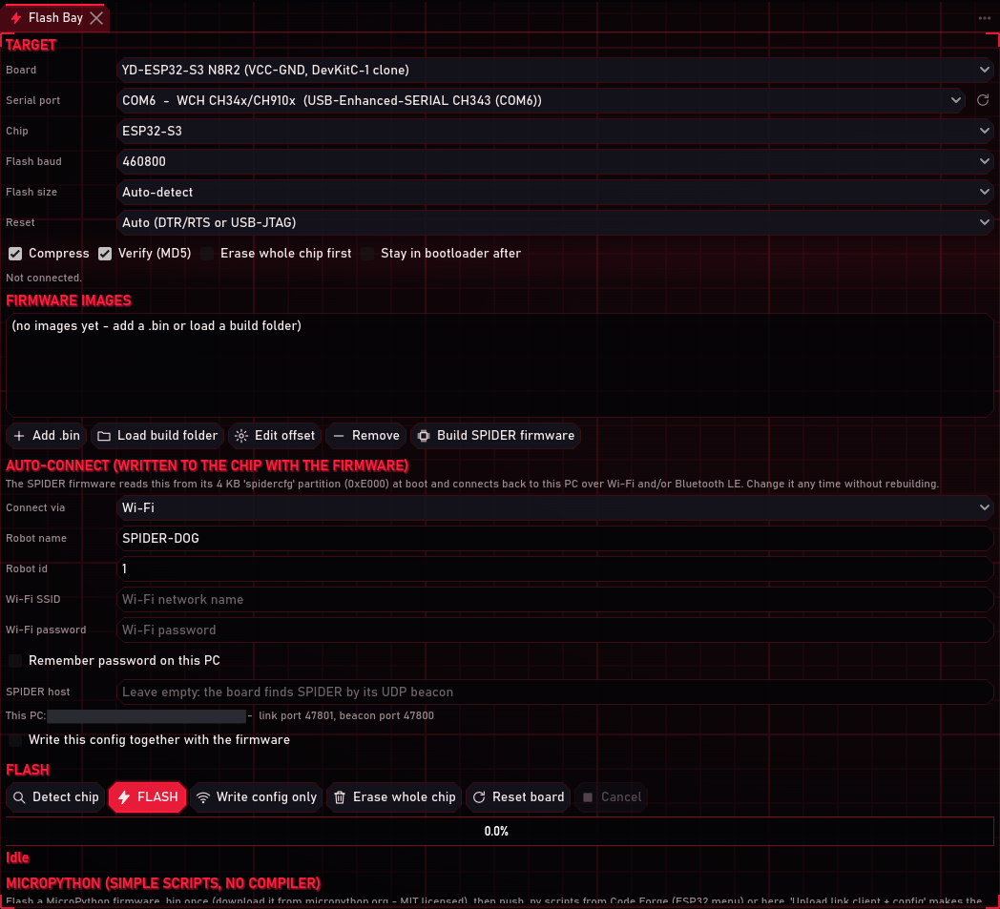
Press Detect chip (in FLASH). S.P.I.D.E.R. resets the board into its bootloader by itself, reads the chip, its MAC address and its flash size, and resets it back:
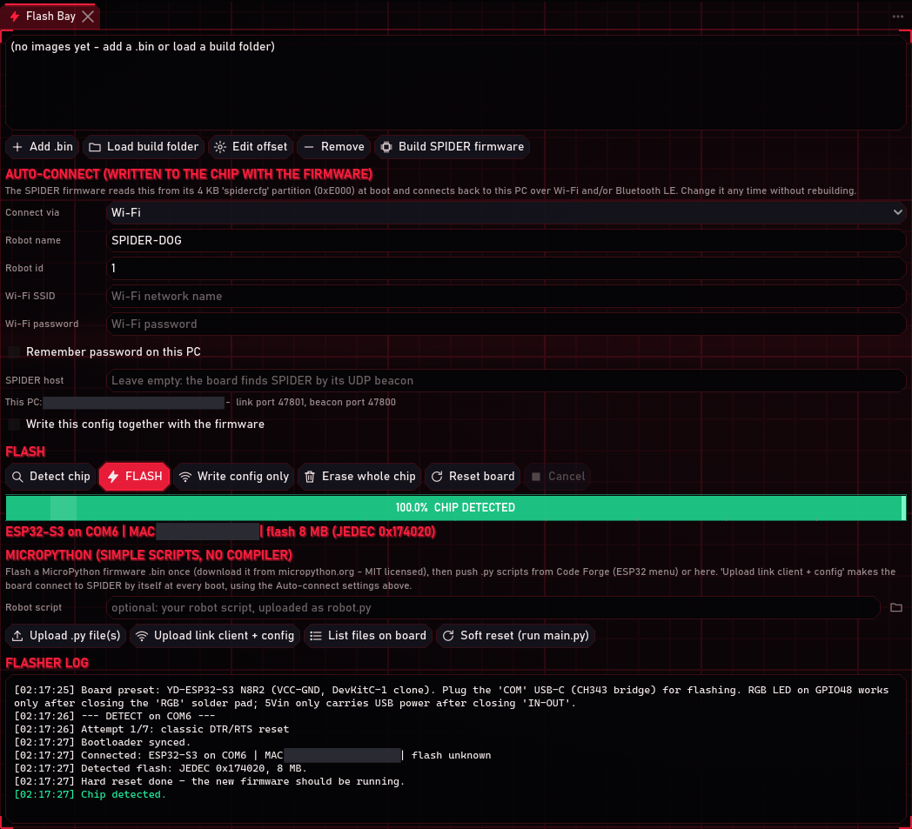
Then:
- Add .bin and pick
ESP32_GENERIC_S3-20260824-v1.29.0.bin. It is a full-flash image, so S.P.I.D.E.R. places it at 0x000000 by itself. - Tick Erase whole chip first, so MicroPython starts with a clean file system.
- Leave Write this config together with the firmware off: with MicroPython, the settings travel as a file in step 8.
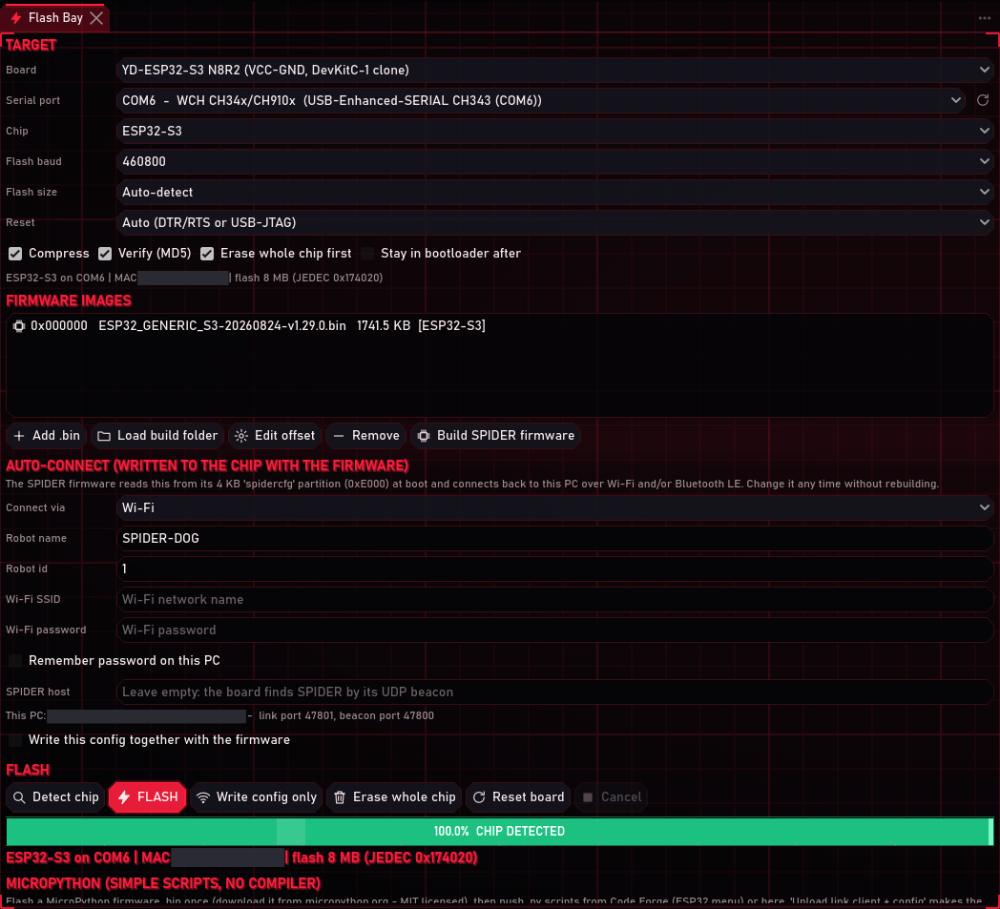
Press FLASH. The bar goes through erasing (25 s), writing (the 1.78 MB image is compressed to 1.16 MB) and an MD5 check, then resets the board into MicroPython. Measured: 71 s from FLASH to Done.
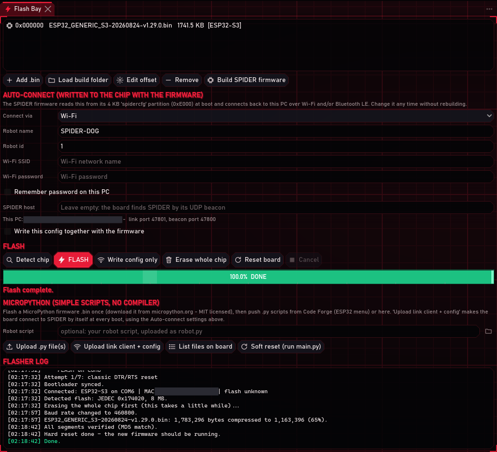
If the board already runs MicroPython 1.29 (for example from the servo tutorial), you can skip this step: step 8 replaces only the scripts.
8. Put the dog leg code on the board
In AUTO-CONNECT:
- Connect via:
Bluetooth LE - Robot name:
SPIDER-LEG, exactly the profile's Matches robot from step 4 - Robot id:
7(any number, unique per robot)
In MICROPYTHON, press the folder button next to Robot script and pick
firmware/micropython/examples/dog_leg_robot.py:
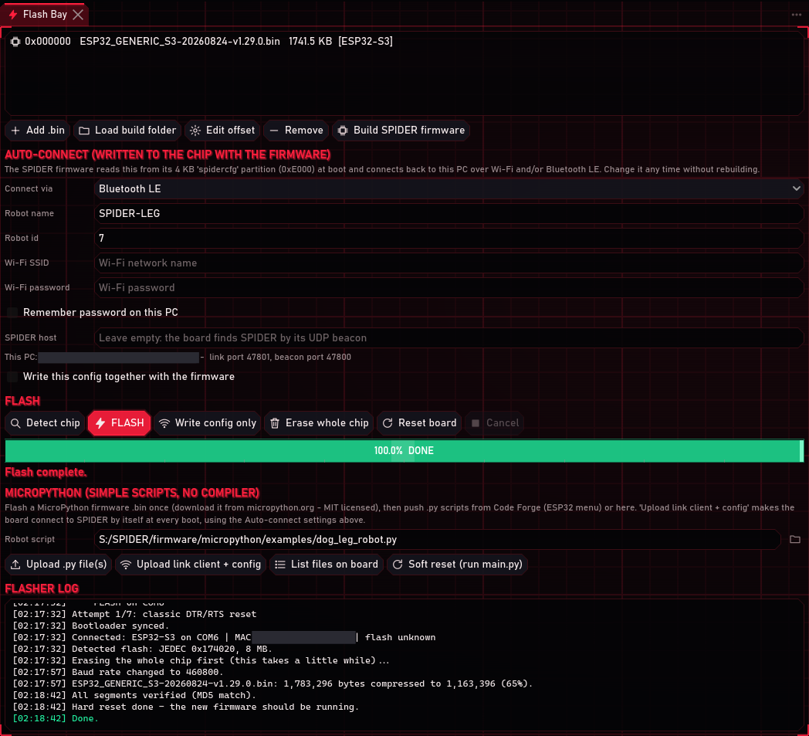
Press Upload link client + config and confirm. Over USB, S.P.I.D.E.R. writes S.P.I.D.E.R.'s link client
(spider_link.py), the settings above (spider_config.json), the dog leg code as robot.py, and a main.py that
starts it all at every boot. Measured: 19 s. The bar reads INSTALLED:
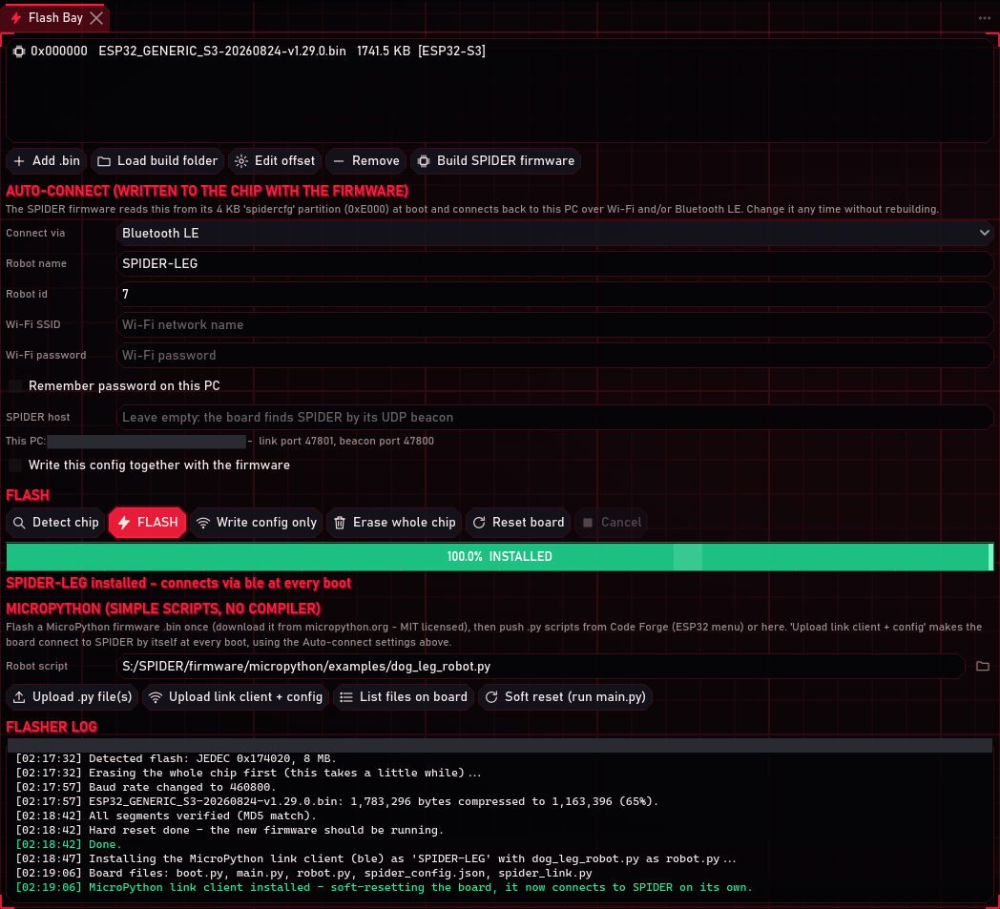
The board restarts and runs the dog leg code: the hip servo turns to 0 and the knee servo to 180 (step 10), and the board starts advertising as SPIDER-LEG.
9. Connect over Bluetooth
In Link Hub > BLUETOOTH LE (THIS PC):
- First time only: press Install Bluetooth support. S.P.I.D.E.R. installs
bleakwith your Python and checks the licence of everything that came with it. - Switch on Auto-connect Bluetooth LE robots.
SPIDER-LEG was online 5 s later, with no pairing dialog. The setting is remembered, so the leg connects by itself from now on.
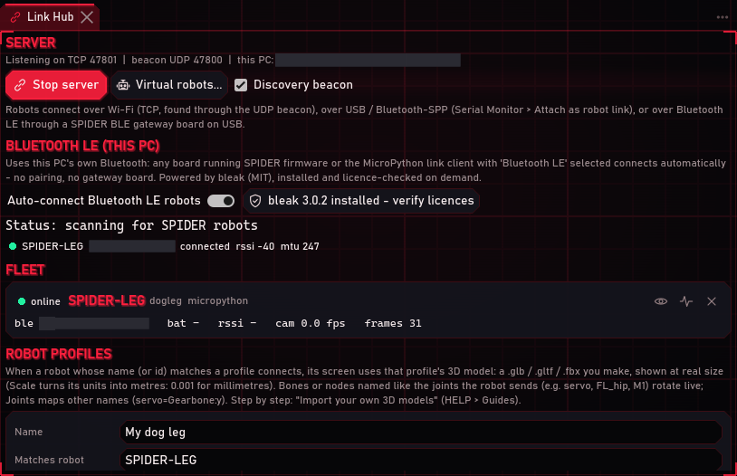
Because the board's name matches the profile, its robot screen opens with your model and joint map.
10. Calibrate and home the servos, then fit the leg
The leg's home pose is the model's rest pose: hip 0 (upper leg level) and knee 180 (lower leg folded back along the upper leg). The board starts there. Higher hip angles lift the upper leg; lower knee angles open the knee:
| Hip | Upper leg |
|---|---|
| 0 | level, lying along the stand (home) |
| 45 | lifted halfway |
| 90 | pointing straight up |
| Knee | Lower leg |
|---|---|
| 180 | folded back along the upper leg (home) |
| 90 | pointing straight up |
| 0 | straight out, the leg at full length |
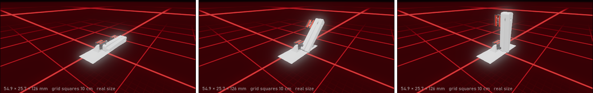
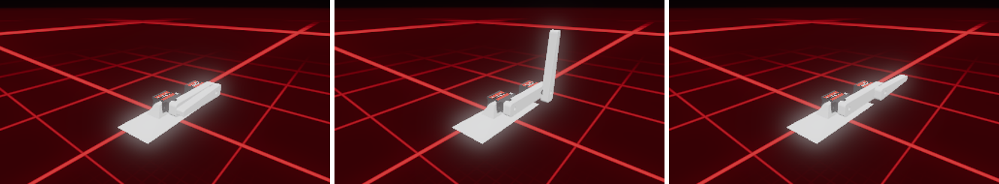
Calibrate each servo
Every MG90S is a little different. With the standard pulses (0° = 0.5 ms, 90° = 1.5 ms, 180° = 2.5 ms) many turn a
few degrees past 0 and past 180, and their middle can be a degree or two off: a hip told 88 that is really at 90 is
normal. It is the servo, not the code. To be sure, send diag hip: the board measures the pulse really leaving its
pin, and pulse 1500 us (should be 50 Hz, 1500 us) - signal OK at 90 means the board sends exactly what it should.
So calibrate each servo once. Put a horn on it (or a mark on its gear) so you can see its angle; a protractor helps.
- Move the hip with its slider until the horn is really at 90, and note the angle on screen, for example 88.
- The same for really 0 and really 180, for example 3 and 176.
- Send them in the robot screen's command box:
cal hip {"at0": 3, "at90": 88, "at180": 176}. The board answers with the pulses it saved:saved hip: 0 deg = 533 us, 90 deg = 1478 us, 180 deg = 2455 us. - The same for the knee:
cal knee {"at0": ..., "at90": ..., "at180": ...}.
From then on 0, 90 and 180 on screen are 0, 90 and 180 on the bench, and every angle in between follows, while the
3D twin keeps showing the angle you asked for. The calibration is saved on the board (servo_cal.json): it survives
restarts and new uploads of the code, but not Erase whole chip.
| Command | What it does |
|---|---|
cal hip |
Show the hip's calibration |
cal hip {"at90": 88} |
Change one point only: here the middle |
pulse hip 2450 |
A raw pulse in microseconds, for a servo that cannot reach 0 or 180 with its slider; any angle goes back to normal |
cal hip {"min_us": 560, "mid_us": 1480, "max_us": 2440} |
Set the pulses for 0, 90 and 180 directly (the ones you found with pulse) |
cal hip reset |
Back to 500 / 1500 / 2500 µs |
Fit the leg
- Press Center (Control Deck), or send
center. Both servos go home. - Fit the upper leg onto the hip servo's gear level, and the lower leg onto the knee servo's gear folded back over it.
- The gear's teeth only let a part sit every few degrees. If the upper leg is not quite level at home, move the hip
until it is, and make that angle its 0: for example
cal hip {"at0": 2}. The same for the knee's 180.
Now home is the same pose on the bench and on screen.
11. Drive the leg
The robot screen (here in the Robot Ops layout) has a row per servo, HIP and KNEE. Each has a slider (live while you drag), the angle and 0 / 90 / 180. The sliders follow the servos however they were moved: the buttons, a pose, the walk cycle or the Control Deck. Sweep (or Walk) starts the walk cycle, Stop holds both where they are, and Release stops both signals (the servos go limp).
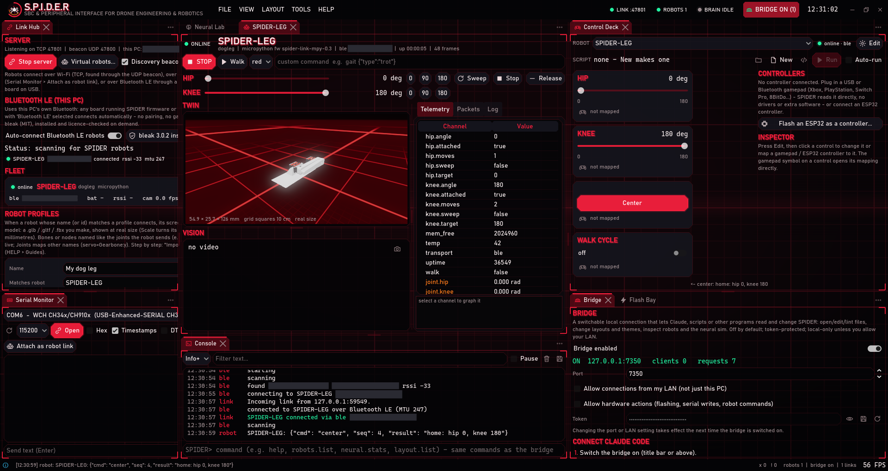
pose {"hip": 45, "knee": 90} lifts the upper leg halfway and stands the lower leg at a right angle to it; the twin
and the telemetry follow:
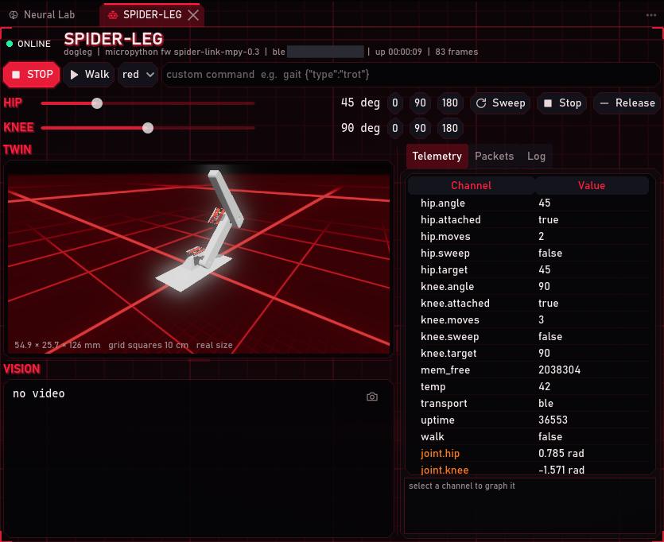
The walk cycle lifts the hip from level to 45 and back, while the knee opens and folds a quarter step behind:
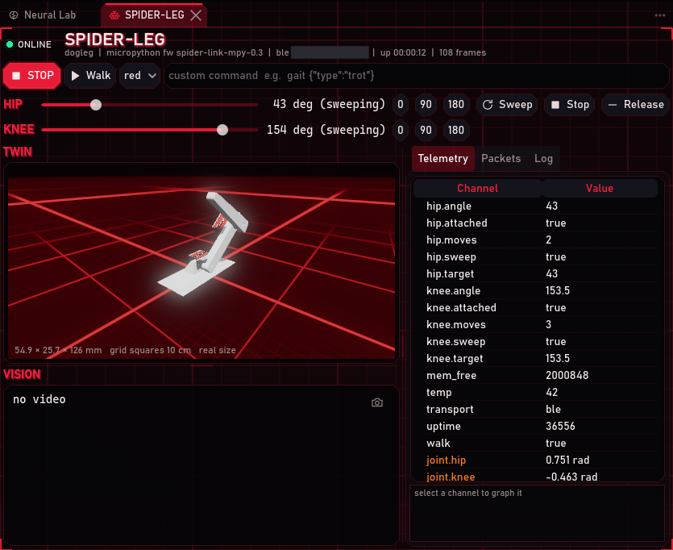
| Command | What it does |
|---|---|
hip 45, knee 120 |
One servo to an angle (0 to 180; home is hip 0, knee 180) |
hip {"angle": 120, "speed": 90} |
The same at 90 degrees a second |
pose {"hip": 60, "knee": 120} |
Both at once |
walk / walk off (or sweep) |
Step cycle: the hip lifts the leg from level and lowers it; a quarter step later the knee opens from folded (180) and folds back |
center (or home) |
Home: hip 0, knee 180 |
stop |
Hold where they are |
detach |
Both go limp |
speed 240 |
Degrees per second for single moves (the walk speeds up with it) |
diag, diag hip, diag knee |
Measure the signal really leaving a servo pin |
cal hip {"at0": 3, "at90": 88, "at180": 176}, pulse hip 1500 |
Calibrate a servo (step 10) |
The Control Deck has the same controls, plus Check signals and Speed (30 to 600 deg/s). The robot screen leaves out the 0 to 3 Speed slider that walking robots have next to Walk: the leg's speed is in degrees per second.
The angles are the angles the board commands. An MG90S has no position feedback, so if the twin moves and a servo does not, check that servo's power and signal wire (Troubleshooting).
12. Watch the board over USB
The COM port stays a serial console. In Serial Monitor, pick the same port at 115200 and press Open; tick and untick RTS (or press the board's RST button) to see the boot from the start:
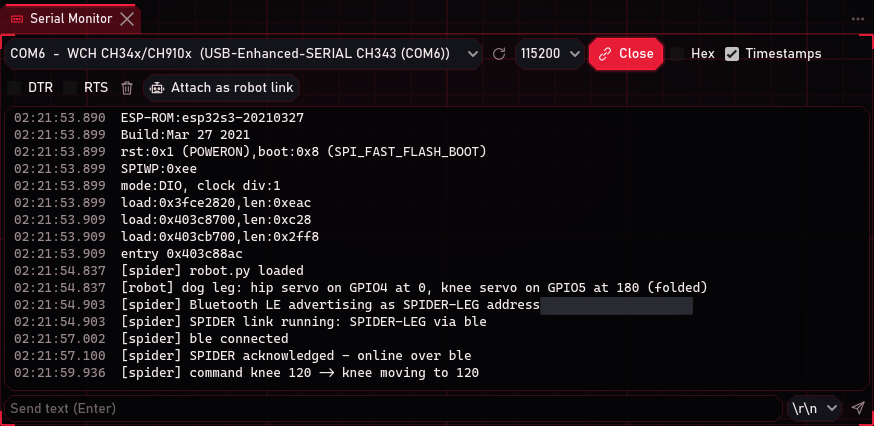
[spider] robot.py loaded
[robot] dog leg: hip servo on GPIO4 at 0, knee servo on GPIO5 at 180 (folded)
[spider] Bluetooth LE advertising as SPIDER-LEG address xx:xx:xx:xx:xx:xx
[spider] SPIDER link running: SPIDER-LEG via ble
[spider] ble connected
[spider] SPIDER acknowledged - online over ble <- 2.2 s after it began advertising
[spider] command knee 120 -> knee moving to 120
After that reset the leg was back online over Bluetooth 5 s later, by itself. Close the Serial Monitor before flashing or uploading: a COM port can only be open in one place at a time.
13. Tune the walk
The walk cycle's size is set at the top of dog_leg_robot.py. Change it, then press Upload link client + config
again (no need to flash MicroPython again):
| Setting | Default | Meaning |
|---|---|---|
WALK_HIP_LIFT |
45 | Degrees the hip lifts the upper leg from level (0) during a step; it never goes below 0 |
WALK_KNEE_EXTEND |
90 | Degrees the knee opens from folded (180) during a step: 90 lifts the lower leg straight up |
HOME |
hip 0, knee 180 | The home pose, which is also the 3D model's rest pose |
WALK_PERIOD |
1.5 | Seconds per step at 240 deg/s; the Speed slider makes it faster or slower |
PINS |
hip 4, knee 5 | The signal pins, if you wire them elsewhere |
Start small and grow the numbers once you know where the parts would collide. To try the commands without the board, Tools > Virtual robots... > DOG-LEG answers them the same way, with the default numbers.
Troubleshooting
| Symptom | Fix |
|---|---|
| The twin shows the built-in leg, not yours | The profile is not used: Matches robot must be exactly the name the robot sends (Link Hub > Fleet shows it), and the 3D model path must exist. The Console says which. |
| The leg stands upright on screen | It was exported without the rotation: step 3, Rotation Y 90 on Armature.001, then export again. |
| Tiny, huge, or nothing in view | Scale 0.001 (the model is in millimetres). The corner of the twin shows the size S.P.I.D.E.R. sees. |
| The twin does not move | The Console names the joints that found nothing and the model's bones (step 5). Check Joints, and that the export had Armature and Skinning on. |
| The knee moves the upper leg, or the hip bends the stand | The weights: in Blender, each part 100 % to its own bone (step 2). Test in Pose Mode before exporting. |
| A joint turns the wrong way on screen | A minus on its axis in Joints: hip=Gearbone:-y or knee=Gearbone_2:-y. |
| No COM port / Detect fails | Use a data cable and the COM USB-C port; close the Serial Monitor. Then hold BOOT, tap RST, release BOOT, and retry. More in the servo tutorial. |
| SPIDER-LEG never comes online | Bluetooth on in Windows, Auto-connect Bluetooth LE robots on, the virtual SPIDER-LEG stopped. The Serial Monitor must show via ble. |
| The board resets when both servos move | Power (step 6): a 5-6 V, 2 A supply for the servos, with a shared ground. |
| One servo does not move | Check signals (or diag knee): if its signal is right, the problem is that servo's wiring or power. |
| A servo turns past 0 or 180, or its middle is a little off | Normal for an MG90S: calibrate it (step 10), cal hip {"at0": ..., "at90": ..., "at180": ...}. diag hip shows the board's pulses are exact. |
| The twin and the real leg disagree | Calibrate both servos, home them and refit the leg: upper leg level, lower leg folded (step 10). |
| The leg hits the stand during the walk | Smaller WALK_HIP_LIFT / WALK_KNEE_EXTEND (step 13). |